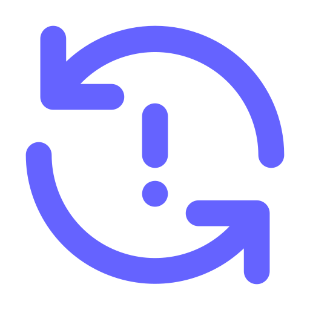

{{ draw.name }}: ({{ draw.from.toLocaleTimeString() }} - {{ draw.to.toLocaleTimeString() }})
{{ bet.content }}
Sent on {{
bet.date_placed.toLocaleString('en-US', { hour: '2-digit', minute:'2-digit', hour12: true})
}} {{ (bet.is_confirmed === true?' confirmed':' waiting confirmation') }}
